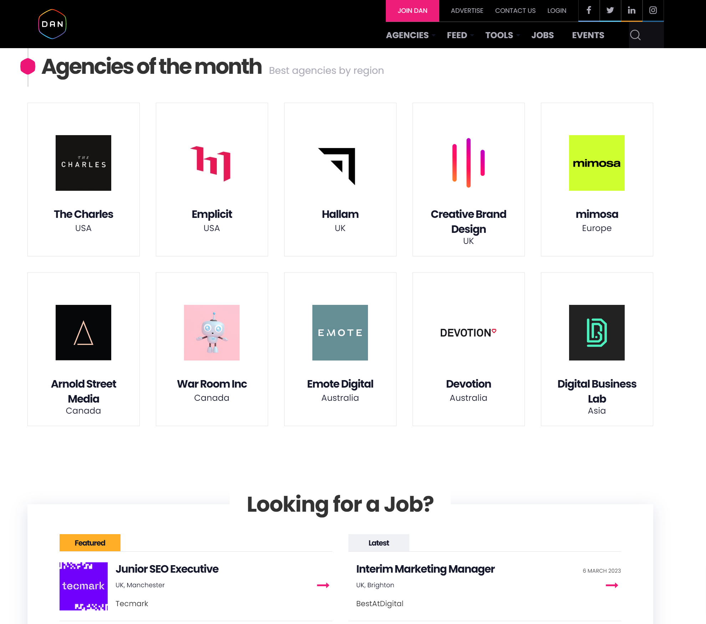
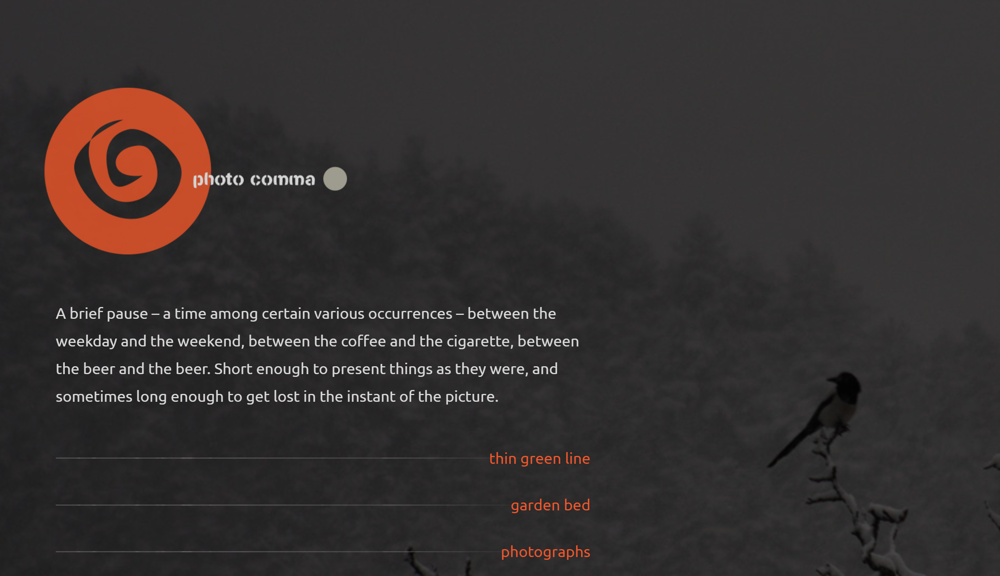
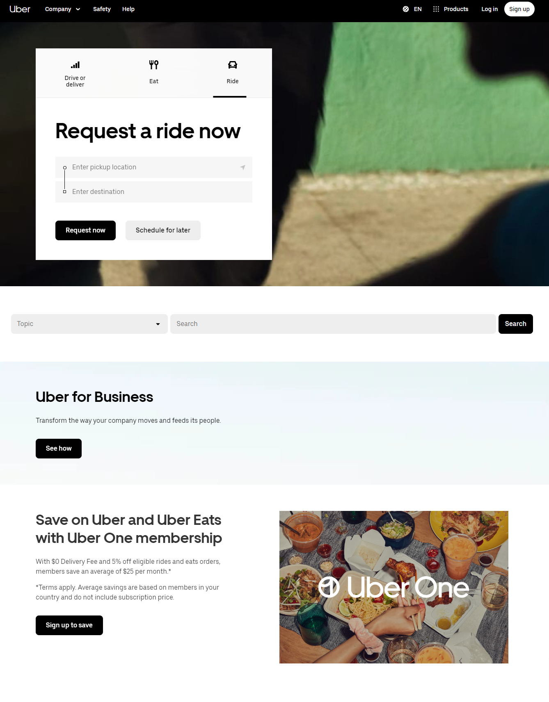

Contrast

- On the Grid website uses contrasting color palatte to capture the attention of users.
- It uses blue colored tiles with white text and white image outline of city landmarks.
- Each tile and font/image switches colors when mouse is hovered which gives another dimension to contrast.
Repetition

Almost all of the websites use repetition of visual elements for organization and display. Digital agency network website is one of the effective examples of usage of repetition in web design. It uses repetition in multiple ways as listed below.
- The first repetition can be seen on the top navigation like any other websites today.
- Then we see a few tiles representing their blog posts with image and some description texts.
- After that there is an Agencies of month section with repeated tiles representing different agencies.
- As we scroll more, other forms of repetition appears on the page which is fascinating.
Alignment

- Photo Comma website takes advantage of alignment in a visually pleasing way.
- Almost all of the text and menu items of the page are heavily left aligned and displayed in a minimal way.
- This allows background image to be almost fiully dispayed to the users.
- This makes perfect sense for a photo portfolio website.
Proximity

- I really like the simplicity of the Uber website.
- The designers have used almost all of the great design elements effectively.
- The proximity of similar elements can be seen across the website.
- I especially liked how close the websites keeps options for the three service they provide.
- The three operations are close together a can be opened from tabs that are clustered together.